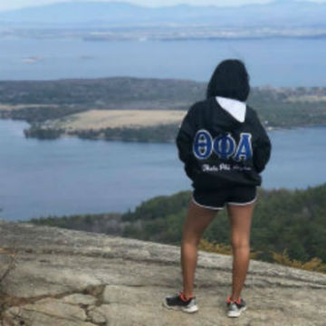
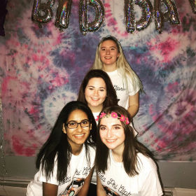

Employment
Patagonia Sales Associate
Patagonia, New York City, NY
June-August 2019
- I assisted in organizing the stock room when new shipments arrived
- I mostly worked on the floor, interacting with the customers, and assiting them in finding the perfect gear for their upcoming trips
- I am also cashier trained, and can work under pressure, and during busy hours

Law Office Assistant
July-August 2018
- I was the assistant to the head lawyer, and paralegal in the office
- I was tasked with contacting the clients if there was ever any confusion on information about a case, or to retrieve missing information
- Sat in on client meetings to gain more understanding on the cases
- I often worked the front desk when the secretary was not in. I would answer the phone, and take messages.
Office Assistant
November 2017-March 2018
- I would organize event details for all major and minor events the Center for Canadian Studies would host
- I greeted visitors, and would help them with any issues they had
- I also typed documents such as correspondences, drafts, memos, and travel arraignments for visitors and the professors who worked in the office

Social Media Chair
November 2017-May 2019
- For two years I was social media chair for my sorority Theta Phi Alpha
- My responsibilites included running all social media platforms such as Facebook, Instagram, Snapchat, and Twitter
- I also used the online software Canva to generate flyers for posts to advertise about upcoming events the organization would host
Contact me at(917)880-4010 or Pisla001@plattsburgh.edu
Copyright © 2019 Priya Islam